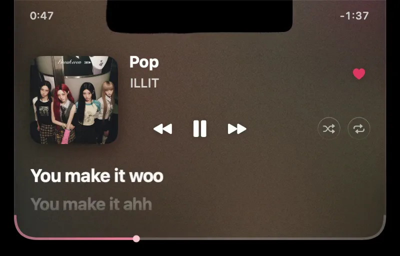
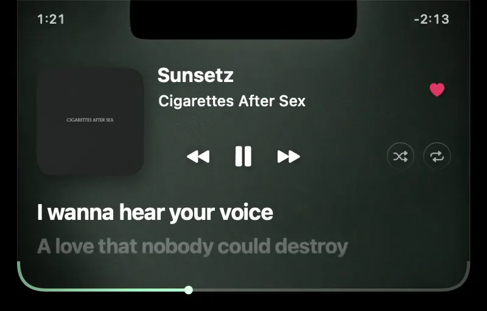
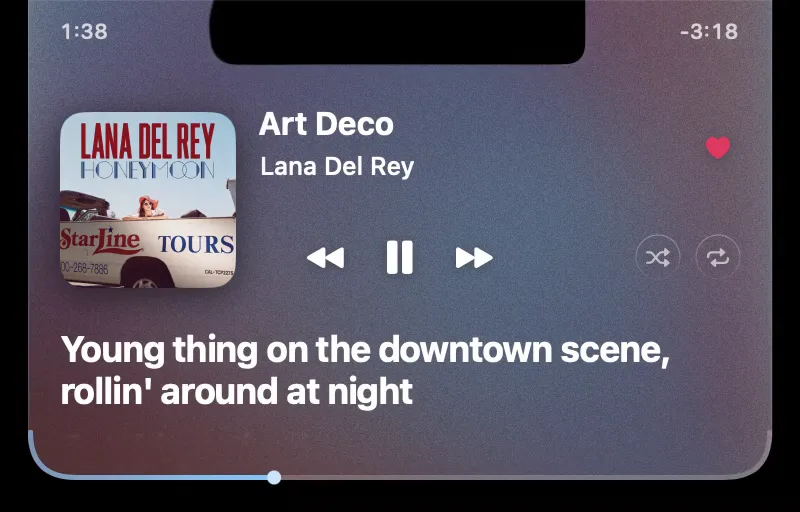
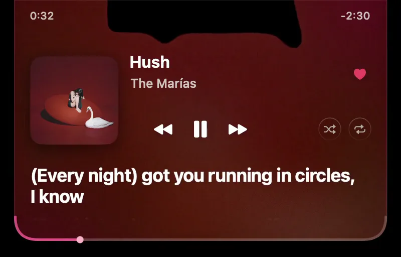

Your MacBook’s notch, now a music player.
Hover it for Spotify or Apple Music controls, with black liquid that moves to the song.
A drawn MacBook. On its screen, a screen recording of Magnetite open under the notch: the cover, title and controls, the song's lyrics scrolling in time under them, and the seek strip, while black liquid pulls around the notch with the music. A two-finger swipe skips the track, a drag along the bottom edge seeks, and the panel folds into the notch and opens again.
- Hover the notch to open the player.
- Drag its bottom edge to seek.
- Swipe two fingers to skip or pause.
What’s in Magnetite

Pop
Sunsetz
Art Deco
Hush
- Spotify and Apple Music only: not browser tabs, YouTube or Podcasts
- Favorites in Apple Music; likes, shuffle and repeat in Spotify
- Volume and brightness shown in the notch
- A floating pill on displays without a notch
- Hides for fullscreen apps and the lock screen
Get Magnetite
Download v0.1.14 ZIP from GitHubNeeds macOS 26 on Apple silicon (Apple menu → About This Mac). Free and open source, 758 KB.
Or paste this into Terminal:
curl -fsSL https://magnetite.app/install.sh | sh
It checks the checksum and signature. Read the installer.
Opening it the first time
- Open the ZIP, drag Magnetite to Applications and double-click it.
- macOS can’t verify it, because it isn’t notarized. Click Done.
- In System Settings → Privacy & Security, click Open Anyway.
- Play something, hover the notch, and allow the two prompts.
You only do this once.
Questions
- What permissions does it need?
Automation, to control Spotify or Music. System audio recording, for the liquid: the sound is read in memory and never saved or sent. No account, no tracking. Privacy details.
- Do I need a Spotify account connected?
No. Likes, shuffle and repeat need a free Spotify developer app of your own; the README has the steps.
- No track, or the liquid is still?
Check Automation and Screen & System Audio Recording in Privacy & Security, then quit and reopen Magnetite.
- How do I update or uninstall?
Rerun the installer to update. To remove it, quit from the M menu and delete the app.